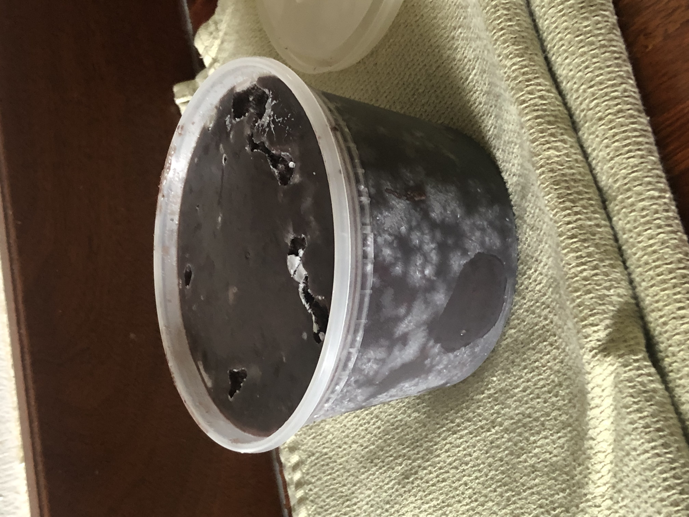

Black Beans

Description
This recipe is from Serious Eats. Goes great on tacos. Serves 10.
Ingredients
- 2 lb black beans
- 10 cups water
- 1 yellow onion, quartered
- 8 cloves garlic, peels and mashed through a garlic press
- 1 Tbsp salt
- 1 orange
Steps
- Sort and rinse the beans.
- Combine beans, water, onion, garlic in a slow cooker. Reserve salt.
- Juice the orange into the slow cooker.
- Cut the rind into a few large chunks and add them to the slow cooker.
- Cook on high with lid stirring for about 4 hours or until the beans are almost done.
- Remove onion and orange rind from the cooker.
- Add salt and stir.
- Cook one more hour with lid off to allow liquid to reduce.
Home